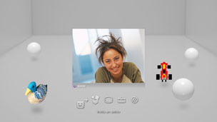

Amici > Chat vocale/video > Avvio o uscita da una chat vocale/video
Avvio o uscita da una chat vocale/video
Per utilizzare questa funzione, potrebbe essere richiesto di aggiornare il software di sistema.
È possibile utilizzare una chat vocale/video con le persone nell'elenco Amici. Per utilizzare la chat vocale è necessario un dispositivo di ingresso/uscita audio (come un auricolare, venduto separatamente). Per utilizzare la chat video, è inoltre necessaria una fotocamera USB (venduta separatamente).
Avvio di una chat vocale/video
1. |
Selezionare |
|---|---|
2. |
Selezionare |
3. |
Selezionare |
4. |
Digitare un messaggio e selezionare quindi [Invia].  Se la persona entra nella chat, viene visualizzata l'immagine corrispondente e viene avviata la chat audio/video. |
 (Amici) > (Avvia nuova chat).
(Amici) > (Avvia nuova chat). (Inizio della chat vocale/video).
(Inizio della chat vocale/video). (Invita un amico) dal menu visualizzato sullo schermo.
(Invita un amico) dal menu visualizzato sullo schermo.Note
- Il sistema PS3™ supporta la chat vocale/video. Attraverso il software di gioco potrebbero essere disponibili opzioni di chat aggiuntive come la chat durante il gioco. Per ulteriori informazioni, consultare le istruzioni per l'uso in dotazione con il software utilizzato.
- Per utilizzare la chat è necessario avere effettuato l'accesso al PlayStation®Network.
- Anche se è possibile invitare più amici nella chat, vengono visualizzati solo gli avatar dei primi cinque amici che sono stati selezionati sullo schermo.
- Una chat room può ospitare fino a sei persone.
- Non è possibile utilizzare la funzione di chat vocale/video se nelle impostazioni dell'account PlayStation®Network sono configurate restrizioni all'utilizzo della chat. Per informazioni sulle impostazioni del filtro contenuti, vedere [Informazioni sul menu XMB™] > [Utilizzo delle impostazioni di filtro contenuti] in questa guida.
- Sul sistema PS3™ è possibile utilizzare un auricolare USB / un auricolare Bluetooth® / una telecamera USB EyeToy™ / una PlayStation®Eye / una fotocamera USB compatibile con la classe video USB (UVC).
- Per collegare una fotocamera USB attraverso un hub USB, utilizzare un hub che supporti una USB 2.0. Se si utilizza un hub che non supporta una USB 2.0, potrebbe verificarsi una degradazione dell'immagine, oppure l'immagine potrebbe non essere visualizzata.
- Per informazioni sulle periferiche supportate e le istruzioni per l'uso, rivolgersi al rivenditore delle periferiche.
Uscita da una chat room (uscita da una chat vocale/video)
Durante una chat, selezionare  (Abbandona) dal pannello di controllo.
(Abbandona) dal pannello di controllo.
Nota
Se esce la persona che ha avviato la chat audio/video, la chat room viene chiusa.